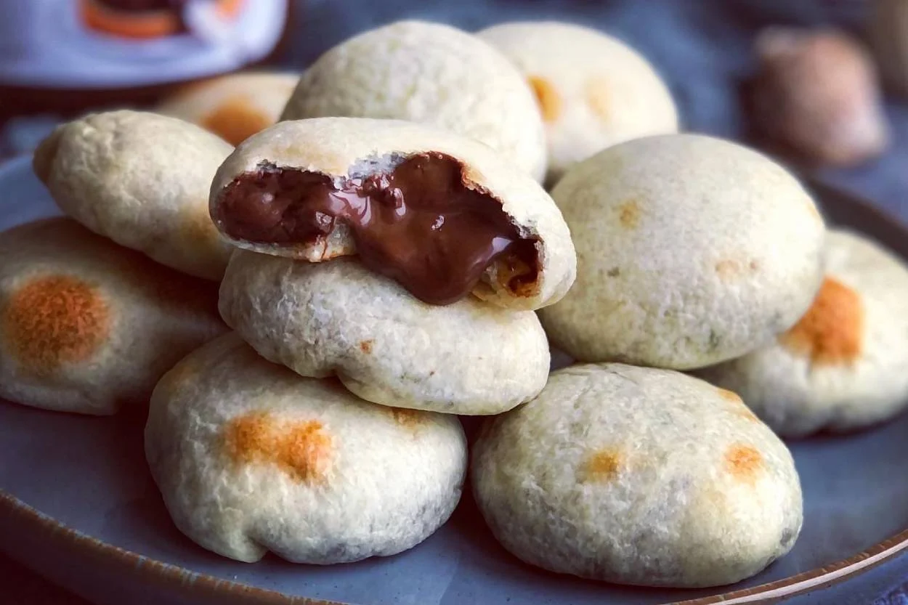

Meşhur İzmir Bomba
Meşhur İzmir bombasını pratik bir şekilde evde hazırlayabilirsiniz.
Tarif: Dr.Otker
Kaç Adet: 16
Hazırlama Süresi: 30dk
Menü: Vejeteryan
İzmir Bomba İçin Malzemler
- 300g kakaolu fındık kreması
- 1,5 su bardağı un
- 1 tutam tuz
- 1 yemek kaşığı toz şeker
- 1 poşet Dr. Otker Şekerli Vanilin
- 0,5 çay bardağı sıvı yağ
- 1 çay bardağı ılık su
- Yaklaşık 1 yemek kaşığı sıvı yağ
İzmir Bomba Nasıl Yapılır
- Bir tabağın üzerine pişirme kağıdı serin. Kakaolu fındık kremasından iki tatlı kaşığıyardımı ile ceviz büyüklüğünde parçalar alın ve 16 adet olacak şekilde tabağa sıralayın.Dondurucuda bekletin.
- Unu derin bir kaba alın, üzerine tuz, toz şeker, şekerli vanilin, sıvı yağ ve ılık suyuekleyip yumuşak bir hamur elde edinceye kadar yoğurun. Hamurun üzerini streç film ilekapatın ve 20 dakika bekletin.
- Fırın tepsisine pişirme kağıdı serin. Fırını belirtilen dereceye ayarlayıp ısınması içinönceden açın. Süre sonunda hamuru hafif unlanmış tezgahta kısa bir süre yoğurun. 16 parçayabölün. Kakaolu fındık kremalarını dondurucudan çıkarın. Tezgaha az miktarda sıvı yağ sürün,bir parça hamuru alın ve merdane yardımı ile yaklaşık 10 cm çapında ince açın, ortasına biradet fındık kreması koyun ve bohça şeklinde kapatın. Üstte kalan fazla hamuru makas veyabıçak ile kesin. Ters çevirerek fırın tepsisine koyun. Fındık kremaları erimeden hızlıcakalan hamuru da aynı şekilde hazırlayıp pişirin.